건축산업기사 (2010-05-09 기출문제)
1과목: 건축계획
1. 학교 건축의 교사배치계획에서 분산병렬형에 대한 설명으로 옳지 않은 것은?
- 각 교실의 환경 조건이 불균등하며 좋지 않다.
- 편복도형으로 할 경우 유기적인 구성을 취하기가 어렵다.
- 각 건물 사이에 놀이터 및 정원을 만들 수 있다.
- 넓은 부지를 필요로 한다.
(정답률: 70%)

2. 사무소 건축의 계단 배치 시 고려해야 할 사항으로 옳지 않은 것은?
- 동선은 간단명료하고 최단거리의 위치에 놓을 것
- 엘리베이터 홀에 근접할 것
- 동선이 혼잡한 곳에 집중적으로 배치할 것
- 주요 계단은 되도록 1층 주요 출입구 근처에 배치할 것
(정답률: 80%)
3. 사무소 건축의 복도 형태에 따른 각종 평면형에 대한 설명 중 옳지 않은 것은?
- 2중 지역 배치(중복도식)는 주계단, 부계단을 두어 사용할 수 있고, 유틸리티 코어의 설계에 주의를 요한다.
- 단일 지역 배치(편복도식)는 채광, 통풍에 불리하다.
- 3중 지역 배치(2중 복도식)는 방사선 형태의 평면형식으로 고층전용 사무실에 주로 사용된다.
- 3중 지역 배치(2중 복도식)는 경제적이며 미적, 구조적 견지에서 많은 이점이 있다.
(정답률: 57%)
4. 상점의 판매형식 중 측면판매에 대한 설명으로 옳은 것은?
- 상품이 손에 잡혀서 충동적 구매와 선택이 용이하다.
- 포장대를 가릴 수 있고 포장 등이 편리하다.
- 판매원이 정위치를 정하기가 용이하다.
- 대면판매에 비해 진열면적이 작다.
(정답률: 69%)
5. 다음 설명에 알맞은 공장 건축의 지붕형식은?
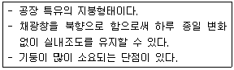
- 톱날지붕
- 뾰족지붕
- 평지붕
- 샤렌지붕
(정답률: 76%)
6. 다음 설명에 알맞은 근린생활권은?
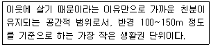
- 인보구
- 근린주구
- 근린분구
- 광역지구
(정답률: 84%)
7. 상점 매장의 가구 배치상 고려해야 할 사항으로 옳지 않은 것은?
- 손님 쪽에서 상품이 효과적으로 보이도록 한다.
- 감시하기 쉽고 손님에게 감시한다는 인상을 주지 않게 한다.
- 들어오는 손님과 종업원의 시선이 직접 마주치게 하여 친근감을 갖게 한다.
- 동선이 원활하여 다수의 손님을 수용하고 소수의 종업원으로 관리하게 한다.
(정답률: 86%)
8. 공장 건축의 형식 중 파빌리온형(Pavilion type)에 대한 설명으로 옳지 않은 것은?
- 공장의 신설, 확장이 비교적 용이하다.
- 건축형식, 구조를 각기 다르게 할 수 있다.
- 공장 건설을 병행할 수 있으므로 조기 완성이 가능하다.
- 단층공장에 적용되며, 중층공장의 경우에는 적용할 수 없다.
(정답률: 75%)
9. 주택의 평면계획에 관한 설명 중 옳지 않은 것은?
- 거실은 통로와 홀(Hall)로 사용되는 것이 바람직하다.
- 거실의 생활은 의식적이고 동적인 행동이기 때문에 그 넓이는 단순히 실내 거주인 수에 소요되는 면적만으로 정해질 수 없다.
- 노인침실은 일조가 충분하고 전망 좋은 조용한 곳에 면하도록 한다.
- 현관의 크기는 주택의 규모, 가족의 수, 방문객의 예상 수 등을 고려한 출입량에 중점을 두는 것이 타당하다.
(정답률: 68%)
10. 사무소의 코어(Core) 계획에 대한 설명 중 옳은 것은?
- 편심코어형은 바닥면적이 큰 사무소에서 많이 사용된다.
- 외코어형은 방재상 가장 유리하다.
- 중심코어형은 구조적으로 바람직한 형이다.
- 양측코어형은 코어를 잇는 복도가 필요하므로 유효율을 높일 수 있다.
(정답률: 81%)
11. 학교의 교사배치형식 중 폐쇄형에 관한 설명으로 옳은 것은?
- 부지의 효율적 활용이 불가능하다.
- 운동장에서 교실로의 소음이 크다.
- 일조, 통풍 등 교실의 환경 조건이 균등하다.
- 구조계획이 간단하고 규격형의 이용이 편리하다.
(정답률: 54%)
12. 실내 환기량에 의한 실의 면적을 구할 경우 성인 2인용 침실의 천장높이가 2.5m이고, 실내 자연환기횟수가 2회/h일 경우 최소한의 침실 바닥넓이는 얼마인가?(단, 성인 1인당 신선한 공기요구량 =50m3/h)
- 10m2
- 20m2
- 25m2
- 50m2
(정답률: 65%)
13. 주택의 동선계획에 대한 설명 중 옳지 않은 것은?
- 동선에는 공간이 필요하다.
- 동선의 3요소는 속도, 빈도, 하중을 말한다.
- 개인, 사회, 가사노동권의 3개 동선이 서로 분리되어 간섭이 없어야 한다.
- 하중이 큰 가사노동의 동선은 되도록 북쪽에 오도록 하고, 짧게 한다.
(정답률: 75%)
14. 주택 부엌에서 작업 삼각형은 작업 능률과 관계되어 있는 것으로 3가지 작업대를 연결하여 만든 것이다. 다음 중 이 3가지 작업대에 해당하지 않는 것은?
- 냉장고
- 개수대
- 배선대
- 가열대
(정답률: 76%)
15. 상점 건축에서 파사드 구성에 요구되는 상점과 관련된 5가지 광고요소로 옳지 않은 것은?
- 주의(Attention)
- 배치(Layout)
- 기억(Memory)
- 욕망(Desire)
(정답률: 84%)
16. 다음 중 쇼윈도우의 눈부심을 방지하기 위한 대책과 가장 관계가 먼 것은?
- 외부 측에 차양을 설치하여 그늘을 만들어 준다.
- 쇼윈도우의 유리면을 경사지게 한다.
- 특수 곡면유리를 사용한다.
- 쇼윈도우 외부를 내부보다 밝게 한다.
(정답률: 85%)
17. 사무소 건축의 엘리베이터에 대한 설명 중 옳지 않은 것은?
- 되도록 한 곳에 집중해서 배치한다.
- 외래자에게 직접 잘 알려질 수 있는 위치에 배치한다.
- 승강기의 배열은 단거리 보행으로 모든 승강기에 접근할 수 있도록 한다.
- Hall 넓이는 승강자 1인당 0.2m2 정도로 하는 것이 가장 좋다.
(정답률: 73%)
18. 주거 내의 행위 중 가장 폐쇄성을 요구하는 행위는?
- 취침
- 식사
- 휴식
- 단란
(정답률: 86%)
19. 중복도형 아파트에 관한 설명 중 잘못된 것은?
- 도심지의 독신자 아파트에 많이 이용된다.
- 프라이버시가 나쁘고 시끄럽다.
- 채광, 통풍조건을 양호하게 할 수 있다.
- 대지에 대한 건물 이용도가 높다.
(정답률: 73%)
20. 다음 중 초등학교 저학년에 대해 가장 권장할만한 학교 운영방식은?
- 종합교실형(U형)
- 일반교실, 특별교실형(U+V형)
- 교과교실형(V형)
- 플래툰형(P형)
(정답률: 82%)
2과목: 건축시공
21. 분할도급의 종류에 해당하지 않는 것은?
- 단가 도급
- 전문공종별 도급
- 공구별 도급
- 공정별 도급
(정답률: 78%)
22. A.E(Air entrained) 콘크리트에 대한 설명 중 옳지 않은 것은?
- 보통 콘크리트에 비하여 철근의 부착강도가 우수하다.
- 시공연도가 좋고 응집력이 있어 재료분리가 적다.
- 동결융해 및 화학작용에 대한 저항성이 크다.
- 공기량이 약 6% 이상 초과하면 강도는 급격히 저하한다.
(정답률: 59%)
23. 함석잇기공사에서 직접 못으로 고정하지 않고 거멀접기를 하는 주된 이유는?
- 못이 보이면 미관상 좋지 않기 때문이다.
- 함석에 대한 온도의 영향을 방지하기 위함이다.
- 녹이 날 염려가 있기 때문이다.
- 경제적인 이유이다.
(정답률: 54%)
24. 테라조 바르기의 줄눈나누기의 크기로 적당한 것은?
- 면적 : 0.9m2 이내, 최대 줄눈 간격 : 1.2m 이하
- 면적 : 1.0m2 이내, 최대 줄눈 간격 : 1.2m 이하
- 면적 : 1.2m2 이내, 최대 줄눈 간격 : 2.0m 이하
- 면적 : 1.5m2 이내, 최대 줄눈 간격 : 2.0m 이하
(정답률: 49%)
25. 제자리콘크리트말뚝공법 중 베노토공법에 대한 설명으로 옳지 않은 것은?
- 주변에 영향을 주지 않고 안전한 시공이 가능하다.
- 길이 50~60m의 긴 말뚝의 시공도 가능하다.
- 굴삭 후 배출되는 토사로써 토질을 알 수 있어 지지층에 도달됨을 판단할 수 있다.
- 케이싱 튜브를 뽑아내는 반력이 작아 연약한 지반이나 수상 시공에 적당하다.
(정답률: 44%)
26. 목조 뼈대의 변형을 방지하는 가장 유효한 방법은?
- 버팀대를 쓴다.
- 통재기둥을 넣는다.
- 가새를 넣는다.
- 붙임기둥을 넣는다.
(정답률: 77%)
27. 지하연속벽(Slurry wall)공법에 관한 내용으로 옳지 않은 것은?
- 저진동, 저소음으로 공사가 가능하다.
- 주변 지반에 대한 영향이 크고, 인접 건물에 피해를 줄 수 있다.
- 통상적인 흙막이공사와 비교하면 대체로 공사비가 높다.
- 지반굴착 시 안정액을 사용한다.
(정답률: 59%)
28. 시공용 기계기구와 용도가 서로 잘못 짝지어진 것은?
- 임팩트렌치 - 볼트체결 작업
- 디젤해머 - 말뚝박기공사
- 핸드오거 - 지반조사시험
- 드리프트핀 - 철근공사
(정답률: 58%)
29. 다음 ( ) 안에 알맞은 숫자는?
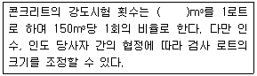
- 150
- 300
- 450
- 600
(정답률: 45%)
30. 시멘트 900포를 저장하려 한다. 공사현장에서 필요한 시멘트 창고의 최소면적은?(단, 단높이는 12단으로 한다.)
- 10m2
- 30m2
- 40m2
- 50m2
(정답률: 69%)
31. 슬라이딩폼(Sliding form)의 특성에 대한 설명 중 옳지 않은 것은?
- 공기를 단축할 수 있다.
- 내, 외부의 비계 발판이 필요 없다.
- 콘크리트의 일체성을 확보하기 어렵다.
- 사일로(Silo)공사에 많이 이용된다.
(정답률: 70%)
32. 철근공사에 관한 설명으로 옳지 않은 것은?
- 한 번 구부린 철근은 다시 펴서 사용해서는 안 된다.
- 철근은 상온에서 냉간가공하는 것이 원칙이다.
- 철근에 반드시 녹막이칠을 한다.
- 스터럽 및 띠철근의 단부에는 표준갈고리를 만들어야 한다.
(정답률: 69%)
33. 강관비계매기에서 건물 높이가 30m 이상일 경우 30m에서 매 3.5m 증가할 때마다 가산되는 인력품의 비율은?
- 5%
- 10%
- 15%
- 20%
(정답률: 59%)
34. 시멘트의 분말도를 나타내는 것은?
- 조립율(FM : Fineness modulus)
- 수경율(HM : Hydraulic modulus)
- 블레인치(Blaine fineness)
- 슬럼프치(Slump)
(정답률: 44%)
35. 석재의 특성에 대한 설명으로 옳지 않은 것은?
- 비중이 크고 가공성이 좋지 않은 편이다.
- 석재는 인장 및 전단강도가 크므로 큰 인장력을 받는 장소에 사용한다.
- 장대재를 얻기 어려우므로 가구재로는 적당하지 않다.
- 내수성, 내구성, 내화학성이 풍부하다.
(정답률: 70%)
36. 도장공사 중 금속재 바탕처리를 위해 인산을 활성제로 하여 비닐부틸랄수지, 알코올, 물, 징크로메이트 등을 배합하여 금속면에 칠하면 인산피막을 형성함과 동시에 비닐부틸랄수지의 피막이 형성 됨으로써 녹막이와 표면을 거칠게 처리하는 방법은?
- 인산피막법
- 워시프라이머법
- 퍼커라이징법
- 본더라이징법
(정답률: 56%)
37. 구리(Copper)로 된 재료를 사용하기에 가장 부적합한 곳은?
- 지붕잇기판
- 냉난방용설비자재
- 화장실
- 홈통
(정답률: 70%)
38. 콘크리트 배합설계에서의 요구사항으로 옳지 않은 것은?
- 소요의 강도를 얻을 수 있을 것
- 시공에 적당한 워커빌리티를 가질 것
- 시공상 재료분리를 일으키지 않고 균질성을 유지할 것
- 시멘트 양을 최대로 늘려 가능한 한 높은 강도를 확보할 것
(정답률: 84%)
39. 아스팔트 프라이머(Asphalt primer)에 대한 설명으로 옳지 않은 것은?
- 아스팔트를 휘발성 용제로 녹인 흑갈색 액체이다.
- 아스팔트방수공법에서 제일 먼저 시공되는 방수제이다.
- 블론 아스팔트의 내열성, 내후성 등을 개량하기 위하여 식물섬유를 혼합하여 유동성을 부여한 것이다.
- 콘크리트와 아스팔트의 부착이 잘 되게 하는 것이다.
(정답률: 47%)
40. KS F 4002에 규정된 콘크리트 기본블록의 크기가 아닌 것은?(단, 단위는 mm임.)
- 390×190×190
- 390×190×150
- 390×190×120
- 390×190×100
(정답률: 73%)
3과목: 건축구조
41. 다음과 같은 바닥구조 형식의 유효폭( )의 크기는 얼마인가?(단, 보의 스팬은 4m)
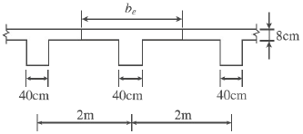
- 100cm
- 168cm
- 200cm
- 250cm
(정답률: 52%)
42. 철근콘크리트보의 스터럽의 역할 중 가장 중요한 것은?
- 전단응력에 의한 균열을 방지하기 위하여
- 주근의 위치를 정확히 유지하기 위하여
- 철근과 콘크리트의 부착을 좋게 하기 위하여
- 압축력을 받는 쪽의 좌굴을 방지하기 위하여
(정답률: 44%)
43. 그림과 같은 트러스에서 T부재의 부재력을 구하면?
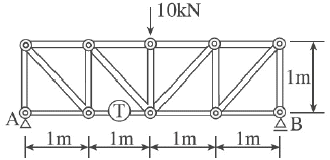
- 10kN(인장)
- -10kN(압축)
- 5kN(인장)
- -5kN(압축)
(정답률: 44%)
44. 그림과 같은 구조물의 판별로 옳은 것은?
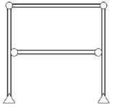
- 안정, 정정
- 안정, 1차 부정정
- 안정, 2차 부정정
- 불안정
(정답률: 64%)
45. 그림은 연직하중을 받는 철근콘크리트보의 단부의 균열 상태를 표시한 것이다. 전단력에 의해 나타나는 것은?
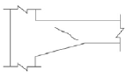
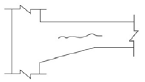
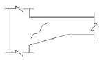
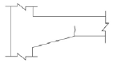
(정답률: 58%)
46. 강도설계법의 기초판설계에서 기초판 상단에서부터 하단 철근까지의 최소 깊이로 옳은 것은?(단, 말뚝기초의 경우)
- 300mm 이상
- 400mm 이상
- 500mm 이상
- 600mm 이상
(정답률: 36%)
47. 그림에서 A지점의 반력 RA의 값으로 옳은 것은?
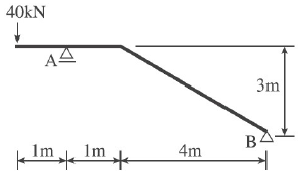
- 40kN
- 44kN
- 48kN
- 52kN
(정답률: 45%)
48. 직경이 5.0cm이고, 길이가 2.0m인 강봉에 100kN의 축방향 인장력이 작용할 때 변형량은?(단, 강봉의 탄성계수 E=2.0×105MPa)
- 0.51mm
- 1.53mm
- 1.86mm
- 2.34mm
(정답률: 48%)
49. 철근콘크리트의 극한강도설계법에서 하중의 조합으로 옳지 않은 것은?(단, D=고정하중, E=지진하중, L=활하중, S=적설하중, Lr=지붕활하중, W=풍하중)
- U = 1.2D +1.0E +1.0L+0.2S
- U = 1.2D +1.6Lr +1.0L
- U = 0.9D+1.3E
- U = 1.2D +1.3W+1.0L +0.5Lr
(정답률: 59%)
50. 다음 그림과 같은 보의 중앙부 C점 단면에서 중립축으로부터 상방향으로 100mm 떨어진 지점의 전단응력도는?(단, 보의 단면은 폭이 150mm, 높이가 300mm이다.)
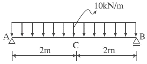
- 0.75N/mm2
- 0.45N/mm2
- 0.25N/mm2
- 0
(정답률: 39%)
51. 철근콘크리트 기둥에서 띠철근의 구조적 역할에 관한 설명 중 옳지 않은 것은?
- 수평력에 대한 전단보강의 작용을 한다.
- 건조수축에 의한 변형발생을 억제한다.
- 주근을 정해진 위치에 고정시킨다.
- 주근의 좌굴을 억제한다.
(정답률: 44%)
52. 부재의 단부에 표준갈고리가 있는 인장 이형철근의 기본정착 길이는 약 얼마인가?(단, fck=24MPa, fy=400MPa, D25 철근의 공칭지름=25.4mm, 에폭시 도막되지 않은 경우, mc=2,300kg/m3)
- 480mm
- 500mm
- 560mm
- 600mm
(정답률: 40%)
53. 다음 도형의 도심에서 x축까지의 거리는?
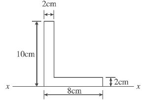
- 3.5cm
- 4.0cm
- 4.5cm
- 5.0cm
(정답률: 40%)
54. 그림과 같은 삼각형의 밑변을 축으로 하는 단면계수는?
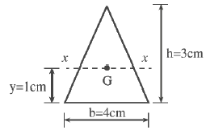
- 3cm3
- 4cm3
- 5cm3
- 6cm3
(정답률: 52%)
55. 그림과 기둥 단면의 핵(Core of section)을 표시한 것이다. AB의 길이는?
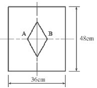
- 6cm
- 8cm
- 10cm
- 12cm
(정답률: 53%)
56. 2방향 슬래브의 전단력에 대한 위험단면은 다음 중 어느 곳인가?(단, d=슬래브의 유효 깊이)
- 받침부
- 받침부에서 d만큼 떨어진 지점
- 받침부에서 d/2만큼 떨어진 지점
- 슬래브 경간의 1/8인 지점
(정답률: 57%)
57. 그림과 같이 B단이 활절(Hinge)로 된 막대에 상향 10kg, 하향30kg이 작용하여 평형을 이룬다면 A점으로부터 30kg이 작용하는 점까지의 거리 x는 얼마이어야 하는가?(단, 막대의 자중은 무시한다.)
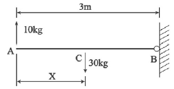
- 1.0m
- 1.5m
- 2.0m
- 2.5m
(정답률: 38%)
58. 그림과 같은 겔버보에서 A점의 휨모멘트의 크기는?
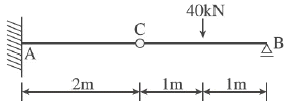
- -20kNㆍm
- -40kNㆍm
- -60kNㆍm
- -80kNㆍm
(정답률: 51%)
59. 장변이 단변의 2배가 넘는 슬래브는 단변을 경간으로 하는 1방향 슬래브로 설계해야 하는데 그 이유는?
- 철근이 절약되기 때문에
- 하중의 대부분이 단변방향으로 작용하기 때문에
- 구조계산이 편리하기 때문에
- 휨모멘트가 작기 때문에
(정답률: 76%)
60. 철근콘크리트 구조물에서 벽체의 전체 단면적에 대한 최소 수직 및 수평철근비 기준에 관한 내용으로 틀린 것은?
- 최소 수직철근비(지름 16mm 이하의 용접철망)=0.0012
- 최소 수직철근비(설계기준항복강도 400MPa 이상으로서 D16 이하의 이형철근)=0.0012
- 최소 수평철근비(설계기준항복강도 400MPa 이상으로서 D16 이하의 이형철근)=0.0015
- 최소 수평철근비(지름 16mm 이하의 용접철망)=0.0020
(정답률: 54%)
4과목: 건축설비
61. 보일러의 출력에 관한 설명 중 옳은 것은?
- 정격출력은 일반적으로 보일러 선정 시에 기준이 된다.
- 상용출력은 정격출력에서 급탕부하를 뺀 값으로, 정미출력의 1/4정도이다.
- 정격출력은 난방부하와 급탕부하를 합한 용량으로 표시되며, 일반적으로 정미출력의 1/2 정도이다.
- 정미출력은 연속해서 운전할 수 있는 보일러의 능력으로서 난방부하, 급탕부하, 배관부하, 예열부하의 합이다.
(정답률: 57%)
62. 증기난방에 대한 설명 중 옳지 않은 것은?
- 예열시간이 온수난방에 비해 짧다.
- 온수난방에 비해 열의 운반능력이 작아 시설비가 높다.
- 환수관의 부식이 비교적 심하므로 수명이 짧다.
- 운전 시 증기해머로 인한 소음이 발생하기 쉽다.
(정답률: 43%)
63. 자동화재탐지설비의 감지기 중 열감지기에 속하지 않는 것은?
- 보상식
- 정온식
- 차동식
- 광전식
(정답률: 62%)
64. 다음은 옥내소화전의 화재안전기준에 관한 내용이다. ( )안에 알맞은 것은?
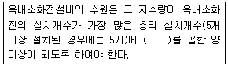
- 1.3m3
- 2.6m3
- 5m3
- 7m3
(정답률: 69%)
65. 사무실의 평균조도를 300lx로 설계하고자 한다. 다음과 같은 조건에서 소요램프의 수로 가장 적당한 것은?
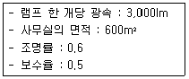
- 120개
- 150개
- 180개
- 200개
(정답률: 23%)
66. 유체를 일정한 방향으로만 흐르게 하고 역류를 방지하는 데 사용하는 밸브는?
- 플래시밸브
- 게이트밸브
- 글로브밸브
- 체크밸브
(정답률: 53%)
67. 220V, 400W 전열기를 110V에서 사용하였을 경우 소비전력 W는?
- 50W
- 100W
- 200W
- 400W
(정답률: 47%)
68. 중앙식 급탕방식에 대한 설명으로 옳은 것은?
- 배관 및 기기로부터의 열손실이 많다.
- 급탕개소마다 가열기의 설치 스페이스가 필요하다.
- 급탕개소가 적기 때문에 가열기, 배관길이 등 설비규모가 작다.
- 용도에 따라 필요한 개소에서 필요한 온도의 탕을 비교적 간단히 얻을 수 있으며 건물 완공 후에도 급탕개소의 증설이 비교적 쉽다.
(정답률: 39%)
69. 35℃의 옥외공기 30kg과 27℃의 실내공기 70kg을 단열혼합 하였을 때, 혼합공기의 온도는?
- 28.2℃
- 29.4℃
- 30.6℃
- 32.6℃
(정답률: 58%)
70. 펌프의 구조상 분류 중 터보형에 속하지 않는 것은?
- 피스톤펌프
- 볼류트펌프
- 디퓨저펌프
- 사류펌프
(정답률: 49%)
71. 다음 중 국부조명에 대한 설명으로 옳지 않은 것은?
- 명암의 차이가 크고 눈부심이 많다.
- 원하는 곳에서 원하는 방향으로 조도를 줄 수 있다.
- 불필요한 장소는 소등할 수 있어 필요한 만큼의 조도를 경제적으로 얻을 수 있다.
- 작업대의 위치가 변하여도 등기구의 배치를 변경시킬 필요가 없으며 그림자가 부드럽다.
(정답률: 50%)
72. 응축수 환수방식에 의한 증기난방방식의 분류에 속하지 않는 것은?
- 중력식
- 상향식
- 진공식
- 기계식
(정답률: 43%)
73. 동일한 관경의 관을 직선으로 연결할 때 사용되는 강관이음쇠에 속하지 않는 것은?
- 플러그
- 소켓
- 유니온
- 플랜지
(정답률: 27%)
74. 급수설비에 사용되는 경질염화비닐관에 대한 설명으로 옳지 않은 것은?
- 내식성이 크다.
- 전기절연성이 크다.
- 가소성이 크고 가공이 용이하다.
- 온도의 변화가 심한 곳에 주로 사용된다.
(정답률: 60%)
75. 교류전동기에 해당하지 않는 것은?
- 동기전동기
- 복권전동기
- 3상유도전동기
- 분상기동형전동기
(정답률: 75%)
76. 다음의 공기조화방식 중 전공기방식에 속하지 않는 것은?
- 단일덕트방식
- 2중덕트방식
- 팬코일유닛방식
- 각층유닛방식
(정답률: 68%)
77. 다음의 LPG에 대한 설명 중 틀린 것은?
- 공기보다 무겁다.
- 액화하면 용적은 1/250로 된다.
- 상압에서는 액체이지만 압력을 가하면 기화된다.
- 액화석유가스를 말한다.
(정답률: 65%)
78. 백화점 화장실에서 일반적으로 사용되는 환기방식은?
- 자연급기-강제배기
- 자연급기-자연배기
- 강제급기-자연배기
- 강제급기-강제배기
(정답률: 73%)
79. 실내공기온도 20℃, 외기온도 0℃, 1시간당 침입공기량 500m3일 때 침입외기에 의한 손실열량은?(단, 공기의 밀도=1.2kg/m3, 공기의 정압비열=1.01kJ/kgㆍK)
- 약 1,686W
- 약 3,367W
- 약 5,060W
- 약 6,745W
(정답률: 35%)
80. 분기회로 구성 시의 유의사항에 대한 설명 중 옳지 않은 것은?
- 복도, 계단 등은 될 수 있는 한 같은 회로로 한다.
- 습기가 있는 장소의 수구는 가능하면 별도의 회로로 한다.
- 같은 방, 같은 방향의 수구는 가능한 한 같은 회로로 한다.
- 대규모 건물에서 전등과 콘센트는 동일한 회로로 구성하는 것을 원칙으로 한다.
(정답률: 62%)
5과목: 건축관계법규
81. 다음 중 건축물의 건축허가를 신청하는 경우 에너지절약계획서를 제출하여야 하는 대상 건축물에 속하는 것은?
- 업무시설로서 당해 용도에 사용되는 바닥면적의 합계가 500m2인 건축물
- 단독주택으로서 당해 용도에 사용되는 바닥면적의 합계가 1,000m2인 건축물
- 식물원으로서 당해 용도에 사용되는 바닥면적의 합계가 1,000m2인 건축물
- 제1종 근린생활시설 중 목욕장으로서 당해 용도에 사용되는 바닥면적의 합계가 300m2인 건축물
(정답률: 24%)
82. 공작물을 축조(건축물과 분리하여 축조하는 것을 말한다)할때 특별자치도지사 또는 시장ㆍ군수ㆍ구청장에게 신고를 하여야 하는 대상 공작물 기준으로 옳지 않은 것은?
- 높이 6미터를 넘는 굴뚝
- 높이 4미터를 넘는 장식탑
- 높이 4미터를 넘는 광고탑
- 높이 2미터를 넘는 담장
(정답률: 47%)
83. 건축물의 3층 이상인 층(피난층은 제외한다)으로서 직통계단외에 그 층으로부터 지상으로 통하는 옥외피난계단을 따로 설치하여야 하는 대상 기준으로 옳은 것은?
- 문화 및 집회시설 중 공연장의 용도로 쓰는 층으로서 그 층 거실의 바닥면적의 합계가 200제곱미터 이상인 것
- 위락시설 중 주점영업의 용도로 쓰는 층으로서 그 층 거실의 바닥면적의 합계가 300제곱미터 이상인 것
- 문화 및 집회시설 중 집회장의 용도로 쓰는 층으로서 그 층 거실의 바닥면적의 합계가 500제곱미터 이상인 것
- 문화 및 집회시설 중 집회장의 용도로 쓰는 층으로서 그 층 거실의 바닥면적의 합계가 200제곱미터 이상인 것
(정답률: 34%)
84. 승용 승강기를 설치하여야 하는 대상 건축물은?
- 6층 아파트로서 연면적이 1,500m2인 것
- 5층 호텔로서 연면적이 2,500m2인 것
- 6층 백화점으로서 연면적이 3,000m2인 것
- 3층 병원으로서 연면적이 3,000m2인 것
(정답률: 59%)
85. 건폐율에 관한 설명으로 가장 알맞은 것은?
- 대지면적에 대한 연면적의 비율
- 대지면적에 대한 바닥면적의 비율
- 대지면적에 대한 건축면적의 비율
- 대지면적에 대한 공지면적의 비율
(정답률: 72%)
86. 노외주차장의 출입구의 너비는 최소 얼마 이상으로 하여야 하는가?
- 3.5m
- 4.5m
- 5.5m
- 6.5m
(정답률: 70%)
87. 지하식 노외주차장의 차로에 관한 기준 내용으로 옳지 않은 것은?
- 경사로의 노면은 거친 면으로 하여야 한다.
- 높이는 주차바닥면으로부터 2.3m 이상으로 하여야 한다.
- 경사로의 종단경사도는 직선부분에서는 14%를 초과하여서는 안된다.
- 주차대수 규모가 50대 이상인 경우의 경사로는 너비 6m 이상인 2차로를 확보하거나 진입차로와 진출차로를 분리하여야 한다.
(정답률: 68%)
88. 부설주차장의 총주차대수 규모가 8대 이하인 자주식주차장의 주차형식에 따른 주차단위구획과 접하여 있는 차로의 너비가 옳은 것은?
- 평행주차 : 2.5m 이상
- 직각주차 : 5.0m 이상
- 교차주차 : 3.5m 이상
- 45도 대향주차 : 3.0m 이상
(정답률: 51%)
89. 다음 중 건축법령상 공동주택에 속하지 않는 것은?
- 아파트
- 연립주택
- 다중주택
- 다세대주택
(정답률: 68%)
90. 다음 중 내화구조에 속하지 않는 것은?
- 철골조의 계단
- 철근콘크리트조의 보
- 철재로 보강된 유리블록으로 된 지붕
- 철근콘크리트조로서 두께가 8cm인 바닥
(정답률: 35%)
91. 사용승인 후 5년이 경과한 연면적 1,000m2 미만인 건축물의 용도를 변경하는 경우, 부설주차장을 추가로 확보하지 않고도 용도변경할 수 있는 경우는?(단, 변경 후 용도의 주차대수가 변경 전 용도의 주차대수보다 산정대수가 많은 경우)
- 위락시설의 용도로 변경하는 경우
- 문화 및 집회시설 중 공연장의 용도로 변경하는 경우
- 다가구주택의 용도로 변경하는 경우
- 업무시설의 용도로 변경하는 경우
(정답률: 39%)
92. 주거용 건축물의 바닥면적의 합계가 520m2일 경우, 음용수용 급수관 지름의 최소기준으로 가장 적합한 것은?
- 25mm
- 32mm
- 40mm
- 50mm
(정답률: 54%)
93. 공동주택의 난방설비를 개별난방방식으로 하는 경우에 대한 기준 내용으로 옳지 않은 것은?
- 보일러의 연도는 방화구조로서 개별연도로 설치할 것
- 보일러실의 윗부분에는 그 면적이 0.5제곱미터 이상인 환기창을 설치할 것
- 기름보일러를 설치하는 경우에는 기름저장소를 보일러실 외의 다른 곳에 설치할 것
- 보일러는 거실 외의 곳에 설치하되, 보일러를 설치하는 곳과 거실 사이의 경계벽은 출입구를 제외하고는 내화구조의 벽으로 구획할 것
(정답률: 52%)
94. 다음 중 건축법상 다중이용건축물에 해당하는 것은?(단, 건축물의 층수가 15층인 경우)
- 숙박시설 중 관광숙박시설의 용도로 쓰는 바닥면적의 합계가 3,000m2인 건축물
- 운동시설의 용도로 쓰는 바닥면적의 합계가 5,000m2인 건축물
- 교육연구시설의 용도로 쓰는 바닥면적의 합계가 3,000m2인 건축물
- 의료시설 중 종합병원의 용도로 쓰는 바닥면적의 합계가 5,000m2인 건축물
(정답률: 48%)
95. 다음 중 위락시설의 부설주차장 설치기준으로 옳은 것은?
- 시설면적 50m2당 1대
- 시설면적 100m2당 1대
- 시설면적 150m2당 1대
- 시설면적 200m2당 1대
(정답률: 73%)
96. 비상용 승강기를 설치하여야 하는 건축물에서 높이 31m를 넘는 각 층의 바닥면적 중 최대바닥면적이 2,000m2일 때 비상용 승강기의 최소설치대수는?
- 1대
- 2대
- 3대
- 4대
(정답률: 31%)
97. 건축물의 주요구조부를 해체하지 아니하고 같은 대지의 다른 위치로 옮기는 것을 의미하는 것은?
- 증축
- 이전
- 개축
- 신축
(정답률: 86%)
98. 다음의 주차장의 주차단위구획에 관한 기준 내용 중 빈칸에 알맞은 것은?(단, 평행주차형식의 경우)
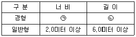
- ㉠ 1.8미터 이상, ㉡ 4.0미터 이상
- ㉠ 1.8미터 이상, ㉡ 4.5미터 이상
- ㉠ 1.7미터 이상, ㉡ 5.0미터 이상
- ㉠ 1.7미터 이상, ㉡ 4.5미터 이상
(정답률: 38%)
99. 공동주택 중 아파트로서 4층 이상인 층의 각 세대가 2개 이상의 직통계단을 사용할 수 없는 경우에는 발코니에 인접세대와 공동으로 또는 각 세대별로 대피공간을 설치하여야 하는데, 다음 중 이 대피 공간이 갖추어야 할 요건에 해당하지 않는 것은?
- 대피공간은 바깥의 공기와 접하지 않을 것
- 대피공간은 실내의 다른 부분과 방화구획으로 구획될 것
- 대피공간의 바닥면적은 각 세대별로 설치하는 경우에는 2제곱미터 이상일 것
- 대피공간의 바닥면적은 인접세대와 공동으로 설치하는 경우에는 3제곱미터 이상일 것
(정답률: 65%)
100. 계단의 설치기준에 관한 설명 중 옳지 않은 것은?
- 높이가 3미터를 넘는 계단에는 높이 3미터 이내마다 너비 1.0미터 이상의 계단참을 설치할 것
- 높이가 1미터를 넘는 계단 및 계단참의 양옆에는 난간을 설치할 것
- 너비가 3미터를 넘는 계단에는 계단의 중간에 너비 3미터 이내마다 난간을 설치할 것
- 초등학교의 계단인 경우에는 계단 및 계단참의 너비는 150센티미터 이상으로 할 것
(정답률: 57%)